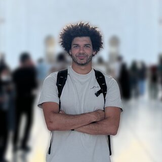
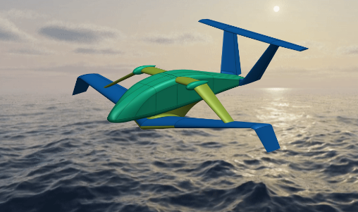
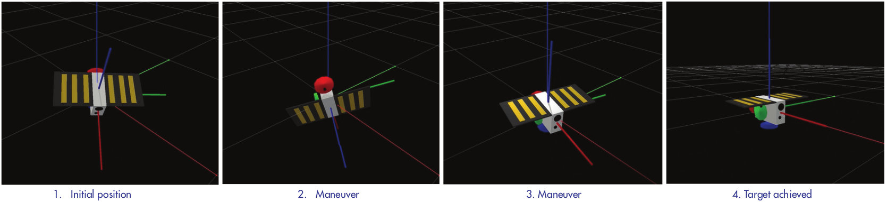

I develop simulators and reinforcement learning controllers for complex autonomous robots: satellites, wing-in-ground aircraft, wheeled rovers and more. PhD from the University of Luxembourg (2025); previously ML Engineer at Argotec, on autonomous navigation for LICIACube (NASA DART) and ArgoMoon (NASA Artemis I).
RL-based autonomous rendezvous and docking for an EIC Pathfinder demonstrator that turns water ice into thrust.

RL flight control and a high-fidelity ground-effect simulator for unmanned wing-in-ground vehicles.
One IsaacLab framework for RL navigation across robots, tasks and media, with sim-to-real transfer.
Deep RL control of floating platforms, microgravity analogs for space navigation, from simulation to the lab.

Deep RL attitude control for nanosatellites, robust to reaction-wheel failures.
Off-world robotic autonomy.
Leads AI research for autonomous robots in Horizon Europe and EIC Pathfinder projects: work-package coordination, simulation and control frameworks, mentoring 2 PhD students, 1 MSc student and 1 research engineer.
ML and RL for autonomous navigation of space and terrestrial robots; lead developer of simulation frameworks for satellites, aerial and aquatic robots.
RL controllers and simulators for satellite GNC; AI-based visual navigation on flight hardware for LICIACube (NASA DART) and ArgoMoon (NASA Artemis I).
Thesis: Deep Reinforcement Learning Control for Autonomous Robots Mobility in Highly Uncertain Environments
ML and AI track; thesis on RL for nanosatellite attitude control.